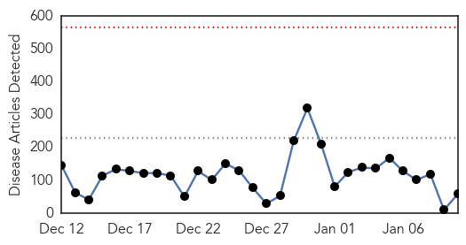
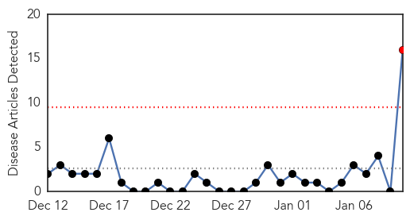
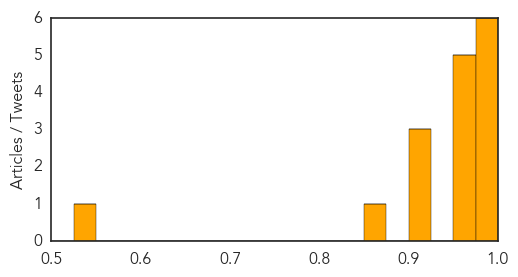

Ebola
30-Day Web Trend
0 alerts, 0 warnings

30-Day Twitter Trend
0 alerts, 0 warnings
Article Locations

Article Confidences

Top Articles:
- 1.000
- Ebola: How Quickly We Forget
- 1.000
- Two Ebola Vaccines to Be Tested in Ravaged Countries
- 0.999
- Ending Ebola in 2015 depends on locals as much as foreign aid
- 0.999
- Ending Ebola in 15 depends on locals as much as foreign aid
- 0.999
- Sierra Leone better positioned now to fight Ebola
- 0.999
- Over 40,000 Africans to join Ebola battle: The numbers so far...and why hope whispers are louder
- 0.998
- Sierra Leone declares first Ebola-free district
- 0.998
- Sierra Leone in better position today, new UN Eloba mission chief says
- 0.998
- Sierra Leone better positioned now to fight Ebola
- 0.998
- Sierra Leone better positioned now to fight Ebola
- 0.997
- 'That 7,905 people have died of Ebola, but during the same period 750,000 children under five died from diarrheal disease'
- 0.997
- Tests rule out Ebola in L.A. patient, officials say
- 0.997
- Ebbing of Ebola complicates testing of vaccines
- 0.994
- 2 leading Ebola vaccines appear safe, further tests starting
- 0.992
- Medical charity MSF opens Ebola clinic for pregnant women
- 0.991
- A health worker under scanner for Ebola in Michigan
- 0.991
- UK leads promising Ebola vaccine trial
- 0.990
- No Ebola cases registered in Saudi ArabiaHealthcare
- 0.988
- Further testing of two Ebola vaccines likely to begin soon
- 0.988
- Further testing of two Ebola vaccines likely to begin soon
- 0.988
- Further testing of two Ebola vaccines likely to begin soon
- 0.988
- Further testing of two Ebola vaccines likely to begin soon
- 0.988
- Further testing of two Ebola vaccines likely to begin soon
- 0.988
- Further testing of two Ebola vaccines likely to begin soon
- 0.988
- Ebola charity: 'We are confident about safety measures'
- 0.987
- Kenya : President Uhuru Kenyatta praises health workers’ bravery to help combat Ebola
- 0.980
- Restaurant review: KOI at The Collection, St Regis Saadiyat Island Resort
- 0.980
- France worried over new terror attacks, hunts at-large suspect
- 0.980
- Maryland bishop facing manslaughter charge is in custody
- 0.980
- Bishop faces several charges in cyclist's death
- 0.980
- Obama to propose free community college program for up to 9 million students
- 0.977
- First trials of Ebola vaccines suggest they are safe; next phase next month
- 0.977
- First trials of Ebola vaccines suggest they are safe; next phase next month
- 0.977
- Ebola communication tips for health officials
- 0.971
- Six granted reprieve from Ebola-related visa ban, allowed into Canada
- 0.963
- The reason Ebola isn’t being stopped
- 0.963
- IMF to provide new funds to help three main Ebola-hit nations
- 0.952
- Bath doctor travels to the heart of the Ebola battle in Sierra Leone but shows little fear
- 0.951
- Boko Haram kills dozens in Nigerian market bomb attack
- 0.951
- Uganda to host first aviation expo ahead of significant growth in sector
- 0.951
- Sierra Leone News: SALWACO to ntroduce Post bola strategy
- 0.951
- Sierra Leone News: Bo Ebola Task Force gets no fund from Govt. – Res. Committee Chair
- 0.951
- Sierra Leone News: IPAM worker docked for larceny
- 0.951
- Liberia: Nigeria Gives More to Fight Ebola
- 0.951
- Sierra Leone better positioned now to fight Ebola: UN
- 0.951
- RAID, Inc. Launches New Website
- 0.939
- Vaccines move to Ebola frontline
- 0.923
- Côte d’Ivoire redoubles its efforts to prevent malaria - Côte d'Ivoire
- 0.897
- Back In D.C. From The Ebola Hot Zone, I Broke Out In A Fever
- 0.819
- Liberia Ebola Situation Report no. 68 - 7 January 2015 - Liberia
Showing top 50 articles...
Top Tweets:
- 0.771
- Spatiotemporal spread of 2014 outbreak of Ebola virus in Liberia & effectiveness of non-pharmaceutical interventions http://t.co/6Uihr7Ff2E
- 0.702
- Not to say that more couldn't have been done in Haiti but Ebola has a lot of spreading potential too.
Cholera
30-Day Web Trend
1 alerts, 0 warnings

30-Day Twitter Trend
0 alerts, 0 warnings

Article Locations

Article Confidences
Top Articles:
- 1.000
- Heroes in Haiti battle forgotten cholera crisis
- 0.992
- Haiti Cholera Suit Struck Down
- 0.987
- Haitians cannot sue UN for cholera outbreak, U.S. judge rules
- 0.986
- Five years after quake, cholera epidemic haunts Haiti
- 0.985
- Five years after quake, cholera haunts Haiti
- 0.976
- U.S. judge rules Haitians cannot sue U.N. for cholera epidemic
- 0.973
- Five years after quake, cholera epidemic haunts Haiti
- 0.964
- U.S. judge rules Haitians cannot sue U.N. for cholera epidemic
- 0.964
- U.S. judge rules Haitians cannot sue U.N. for cholera epidemic
- 0.964
- UN 'immune' from #Haiti cholera lawsuit
- 0.964
- U.S. judge rules Haitians cannot sue U.N. for cholera epidemic
- 0.915
- US judge tosses lawsuit vs. UN over Haiti cholera outbreak
- 0.910
- U.S. judge rules Haitians cannot sue U.N. for cholera epidemic
- 0.901
- UN immune from lawsuit in Haiti cholera outbreak
- 0.851
- US judge tosses lawsuit vs. UN over Haiti cholera outbreak
- 0.542
- Haitians learn to live with disaster upon disaster
Top Tweets:
-
No tweets found for Jan 10, 2015